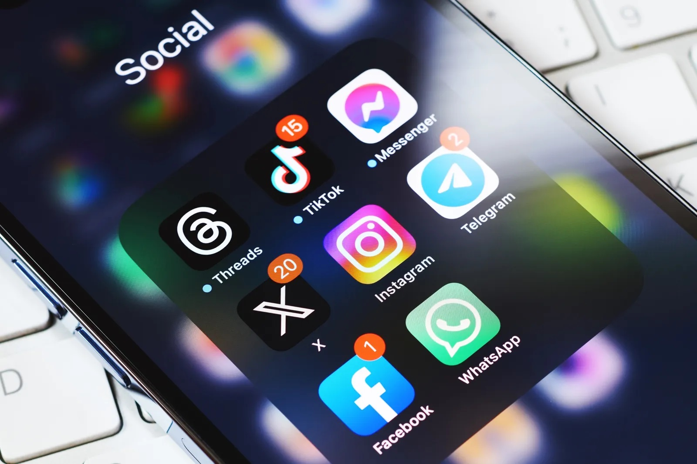

Page 1: | Home
Page 2: | The Case For Digital Advertising
Page 3: | The Case For In-Person Advertising
Page 4: | Final Thoughts
Page 5: | Works Cited
Digital marketing has many distinct advantages over in-person marketing, namely its ease of access. Anyone can advertise digitally and everyone has the capability to view it. This is even more pronounced for college students. In the article “How To Effectively Advertise To College And University Students: Trends And Insights,” “How To Effectively Advertise To College And University Students: Trends And Insights,” , the author states that “TikTok has become a vital recruiting tool, with two-thirds of teenagers using the platform, making it essential for colleges to have a presence there” (Salazar). The article goes on to show YouTube, X, and Facebook also receive significant usage from students. All of this is to say, advertisements for job fairs have a high likelihood of reaching their intended audience when done through these social media sites. Additionally the use of the VPCC app for marketing is an option. In the article “Campus Involvement: The Tech Connection” the author focuses solely on the effectiveness of communicating important Campus events via a college app, saying “About four in 10 students over all say the ability to receive notifications about events from a campus app would boost their participation” (Flaherty). Finally, it is important to note that digital marketing is easier for the event organizers than in-person marketing, since it can be done from the comfort of their regular workspaces.
